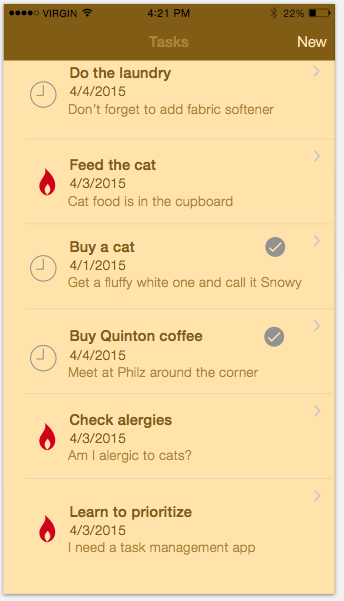
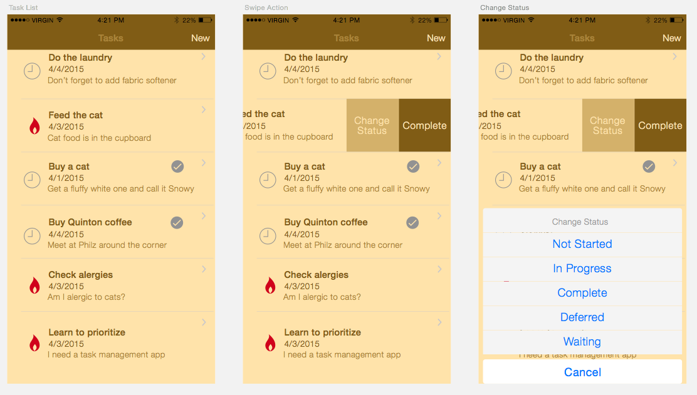
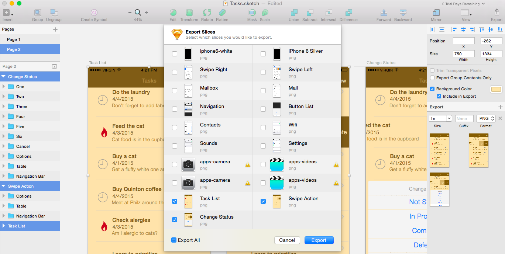

TUTORIAL NAME
Designing Mobile Apps For The Enterprise
Tutorial II: Using Sketch to Design Your App
In the previous tutorials we created a lo-fi prototype. This prototype is great to get the general flow of your app sorted out, and capture feedback to see if you have missed any key functionality. Now it is time to make it look a little nicer with some user interface design
Maybe enterprise developers shiver at the notion that they need to make the app look good. Like it, or not, your user expect great looking apps. Thankfully there are a few amazing tools that allow anyone to make stylish apps. Of course, a professional designer will be able to make truly slick interfaces, but that's ok, ours will still be awesome.
Introducing Sketch
If enterprise developers had a secret to design success, it would be Sketch. Sketch is like photoshop if you stripped out all the complicated image manipulation and layers to provide an app specifically created to design mobile app interfaces. We are going to use it to make a nice UI for our app. Go ahead and download the trial version and let's get started. While you are at it, download the latest iOS8 template. We will use this to help us create our app design.
Artboards
Start by creating a new project based on the iOS UI Design template for iOS8. (Don't choose the iOS UI Design template in the Sketch menu. At the time of writing, this still refers to iOS7) Once created, you will be presented with some gorgeous looking iOS widgets. We will use those in a minute. First we want to create a new page and drop our artboards onto it. You can think of artboards as equivalent to the screens you just created with your paper prototype. In fact, we are going to use that prototype to build our design.
You might be wondering why we are going from paper prototype to sketch for design. Paper prototypes are incredibly quick and easy to produce in a meeting or when inspiration hits you. Yes, once you get proficient at Sketch, you can do the same thing, and I often do on projects at home, but I have found that by producing paper prototypes - devoid of color or style - allow you to get good feedback on the flow of the app. Adding color and design too early can distract users from the app. By the end of this tutorial we go back to Flinto and update our prototype with the artboards we create. At that point, we will be ready for design feedback.
Click the > beside UI elements to close the page, then click the + beside Elements and add a new Page. Our app isn't too complicated. We can lay out the artboards on one page. Once your page is created, add an artboard, TaskList, by pressing A, or selecting insert Artboard, then choose iPhone6 for our dimensions.
Elements of Style
I'm not a designer. Thankfully you don't need to be to create good looking apps. Sure, they may not be as amazing as ones created by a professional designer, but with a few little design tips you can achieve some great results.
Color palette
A consistent color palette can make or break an app. It's not always about the colors you choose, rather more about how they compliment each other, and represent the theme or feel that you want your app to invoke. For example, if I was building an app about photography, I might stick to mostly blacks and whites; they offer the best clean look and bring out the best in photographs (yes, there is a reason that most photo frames are black with white stock paper). If I was building a travel app, I might look more to earth tones like brown, green, yellow, and blue - all the colors I think of when picturing the outdoors. The trick is to draw inspiration from your subject - photography, travel, or your corporate colors.
Start by selecting a primary color. Once you have an idea of a primary color, we can build a palette (typically 3-4 different hues around the primary color) around this. Thankfully, there are some great tools to help us color challenged folks out there. We are going to use paletton to help us. For our Tasks app, we might look for inspiration from notebooks or pen and paper - the traditional way people keep lists of tasks. Play around with Paletton, until you find something you like, but for our tutorial we will go with a base hex #FFE3AA. It feels like a notebook. Paletton has a great feature where you can click on the example tab and see a sample webpage with your color palette too.
Let's add the palette to our sketch project now.
Iconography
Iconography, just like color palettes, is an art form in itself. Styles changes all the time with flat icons being the "in thing" at the moment. We will keep our iconography lesson simple, but following these 3 basic rules:
Icon function should be immediately recognizable without the addition of text. In other words, stick to known, or representative shapes: stars for favorites, shopping carts for placing orders, pencils for edits etc.
Use single colors for icons. White, blacks, and grey always work well. Save colors for drawing attention.
Find a free set of icons, or pay for a really good set. The money you spend on icons is well worth it. Having worked with designers for much of my career, I am constantly amazed at the time and attention to detail it takes to build a good icon set. To me, a good icon set is money well spent. For our tutorial, we are going to use a free sketch template that includes plenty of icons to get us started.
Fonts
The third important element of style you should be familiar with is fonts. Fonts can greatly improve the appearance and usability of your app. Since we are building mobile apps, it is advisable to go with modern clean fonts that don't use serifs (those little wings on the ends of fancy fonts). You don't need to spend too much time debating which font to use. For 90% of the apps I build I select either Helvetica Neue, Garamond, Futura, or Avenir Next. Then, within my app, I might adjust the weight of a particular font depending on whether it is a title, subheading, body etc.
Back to the task at hand
Ok, perhaps that was a little cheesy, but I think that is enough style theory for now. Let's finish off our app design. We will spend our time working on the task list screen during this tutorial. I will leave the other screens for homework, or you can download the completed sketch file here.
Start by grabbing your designs from Tutorial 1. I like to lay them out beside me while I am working - which is another reason I prefer to start with paper-based designs. Now we are going to use our introduction to style, and leverage the iOS elements contained in the Sketch project template we are using, and the icons template we downloaded earlier to create our screen.
Here are the elements we will use: (from the project template) 1. Navigation Bar
(from the ios7 icon set) 1. active-calories - we will use this to set an icon for high priority items. Things are on fire! 2. recents - we will use this to identify normal tasks. We are on the clock 3. selected - we will use to visually indicated a task is completed.
TaskList
Let's go ahead and create our UI for the TaskList. I used the following colors, in hex, from our palette for the elements, plus an additional color for emphasis on high priority items. Notice how a consistent color palette really makes a difference!
| Section | Color (Hex) |
| Background | FFE3AA |
| Title Bar | 805C15 |
| Title Text | AA8439 |
| New Text | FFE3AA |
| Subject | 805C15 |
| Due Date | 805C15 |
| Note | AA8439 |
| Standard Icons | 929292 |
| High Priority Icon | D0021B |
By the end, you should have something similar to the following screen. 
Design The Rest of Our App
By now you should have the basics of app design and using sketch. We want to create a few more artboards to represent the remainder of our app. The quickest way to achieve this is to duplicate the TaskList artboard and only changing what you need. Go ahead and create two more artboards for Swipe Actions, and Change Status, using the elements from the Teehan+Lax palette we used before. For now, we are going to skip Task Details, and the New Task screen.

Testing Your Design
Now that we have a pretty nice looking app! I'm no designer, but hey, it's not bad. Let's start another feedback loop with our users. We are going to use flinto again, but this time, instead of the paper based wireframes, we are going to use our nicely designed sketch screens, or more specifically, the artboards.
To export the artboards, click on each one, and press the + symbol to make it exportable. You will notice that you have the option of exporting in 1x, 2x, ... resolution. This will come in very handy shortly when we want to export icons for different iPhone resolutions. For now, however, 1x is just fine.
Once you have flagged your artboards for export, select File > Export, uncheck any of the items from the Teehan+Lax pages, and select our three artboards. Then, simply click export to save each artboard as a separate png.

Now that you have the png files, jump back into Flinto, using the steps from tutorial 1, and share you fancy new app design for some iterative feedback. Perhaps the color scheme isn't to the users liking, or the icons don't resonate. Whatever it is, you can easily make adjustments in sketch until your app is pixel perfect. You can even try my app here.
Note: If you are really digging Sketch - and I'm not surprised if you do, I love it - you can improve your workflow even more by installing Sketch Mirror on your iPhone or iPad. Sketch Mirror allows you to instantly preview your artboards right on your phone without requiring an export. Cool huh!
Handing Off Your Design For Coding
At this stage, our design is done. We've gone through a few rounds of user feedback, tweaked the design, and now want to code it. The Sketch files you have created can be used as a guide for developers to implement the app in XCode, Apple's development environment for building iOS apps. Developers can see precise pixel layouts (although layout is a little different in XCode, but we will cover that in another tutorial soon), and through Sketch's export feature, we can drag and drop all the icons and images right into XCode. Let's go back to Sketch and flag our icons for export, then run the export again.
Within Sketch, select each icon type you want to export and click Make Exportable in the bottom right hand corner. Go ahead and add an export for 1x and 2x images. Notice how Sketch automatically names the different resolution images with a suffix like @2x? XCode can use this to intelligently select which images to render depending on device.
Summary
Throughout this tutorial, we took our paper prototypes and, with a brief introduction to mobile design, created a pretty slick looking app using Sketch. We then took our design through another feedback loop before exporting all of the assets ready for the next stage, coding our app. Congratulations! You are well on your way to being a enterprise mobile developer.
Tweet